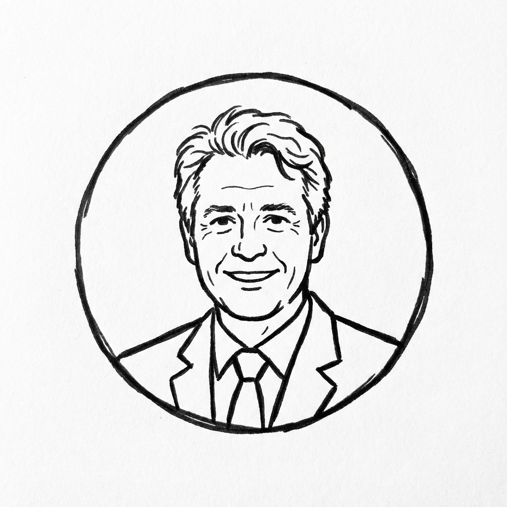
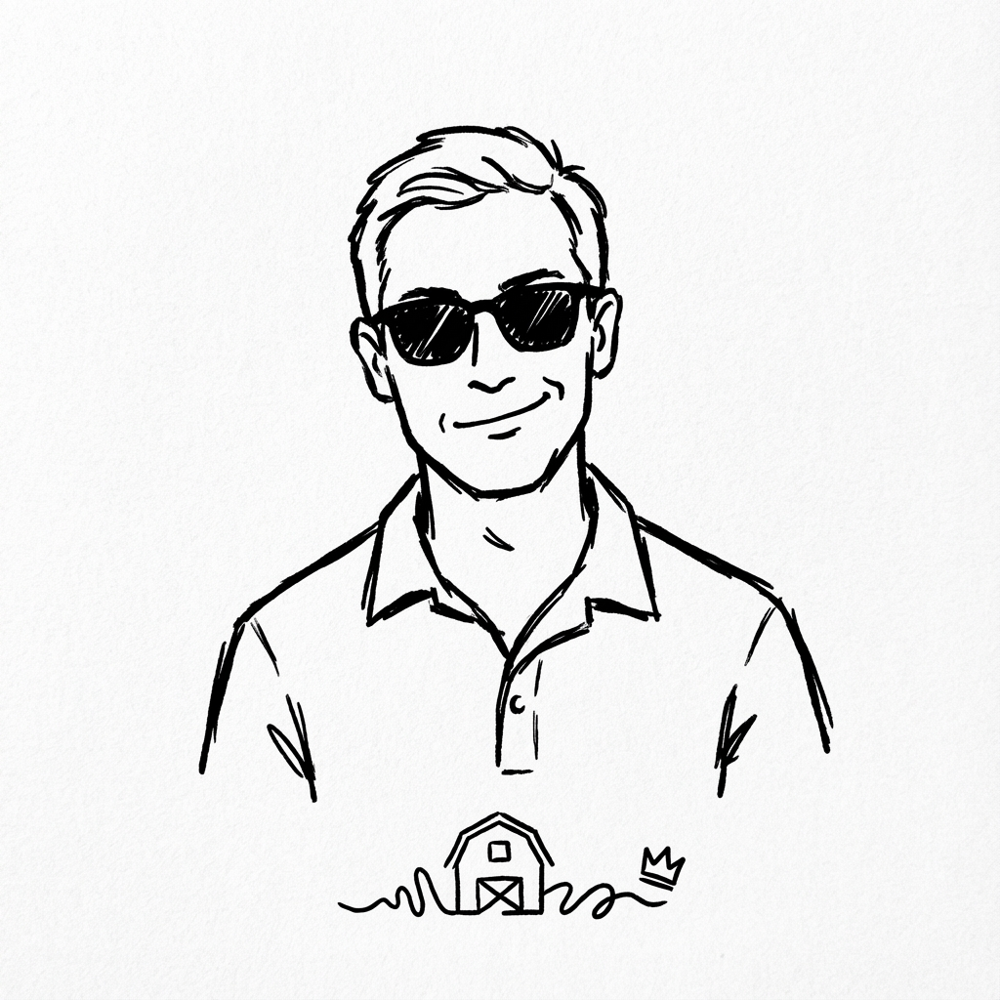
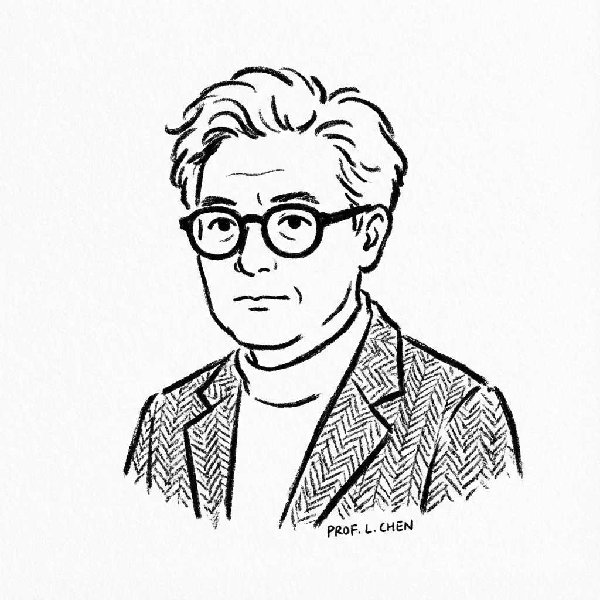
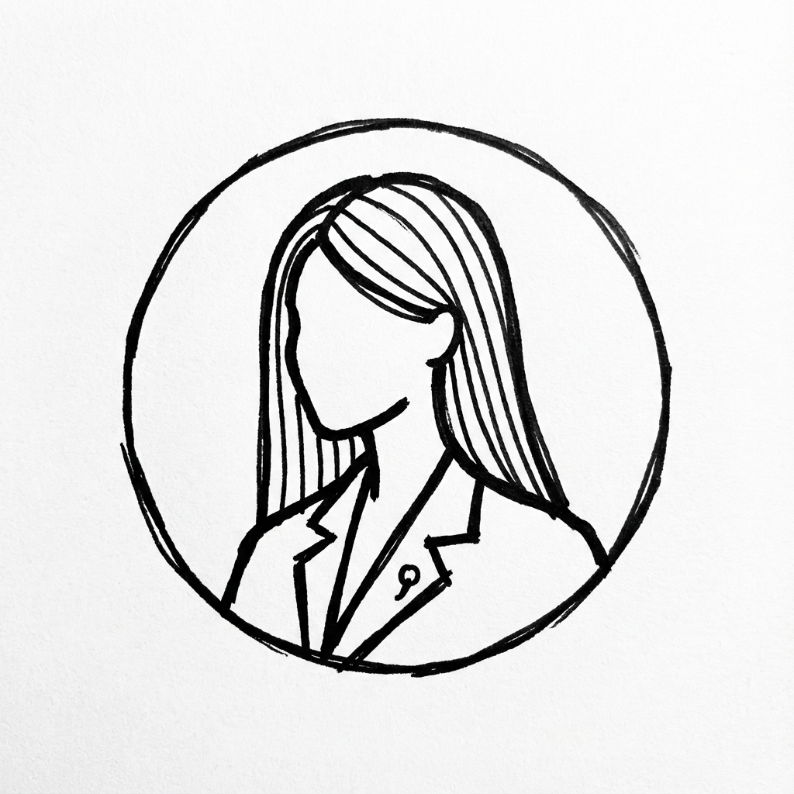
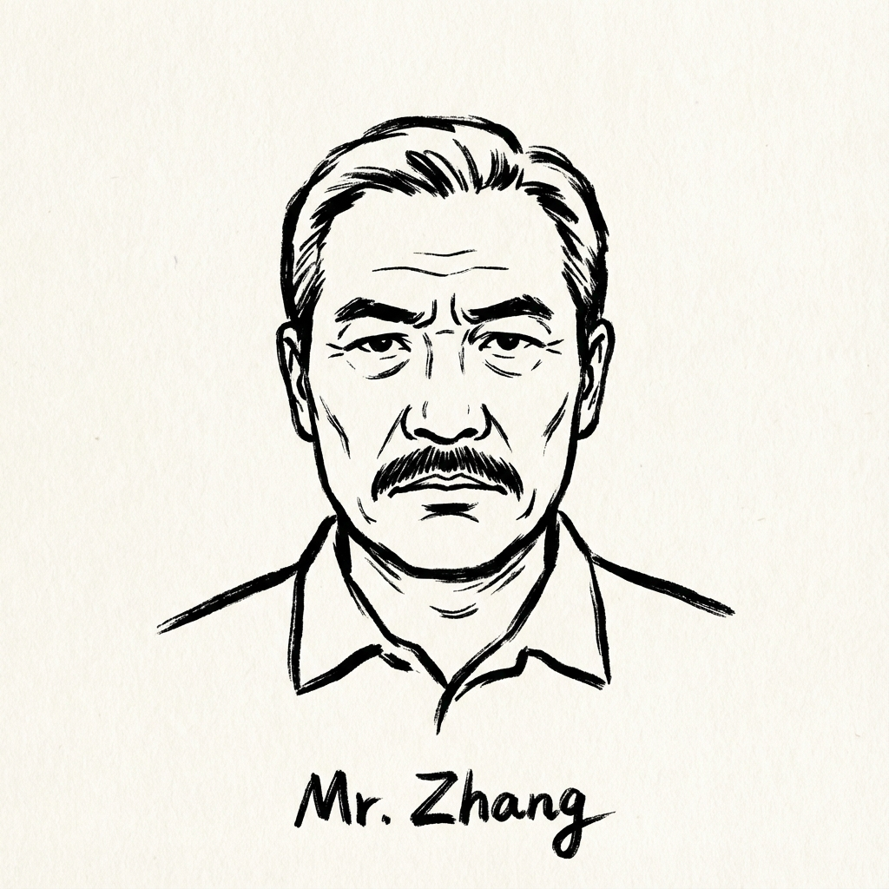
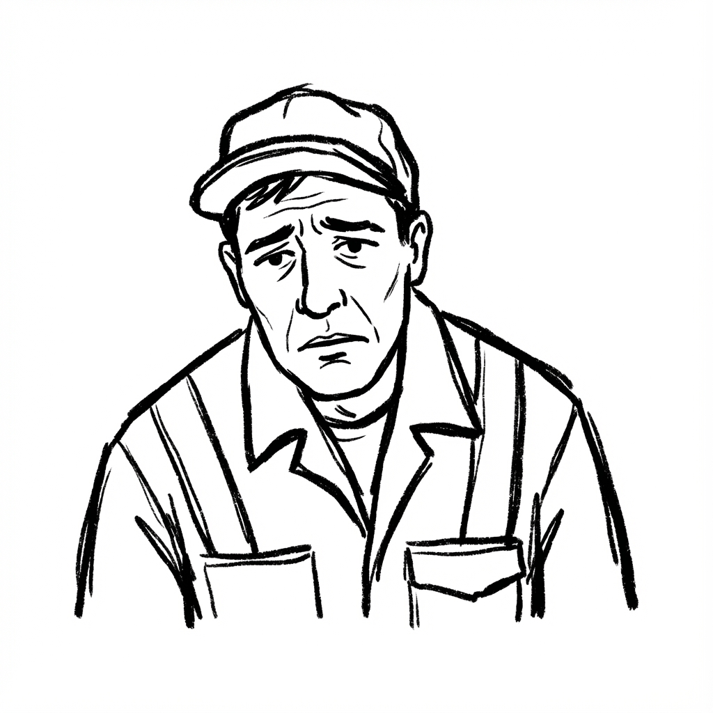
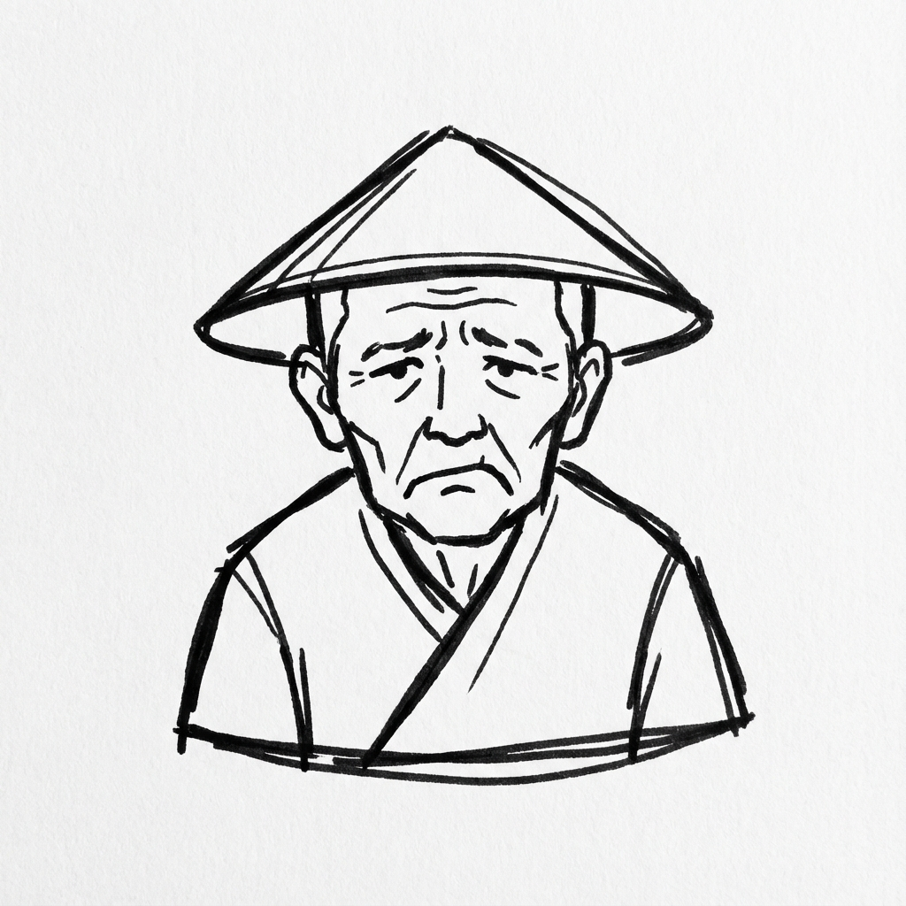

壯圍鄉長
渴望翻身
「別再叫宜蘭人『顧田』給台北人看！路通了、產業來了，年輕人才會回來。」
—— 壯圍鄉長 沈清山

在地地主
看好房市
「竹科以前也沒人，高鐵來了就會滿。這是國家重大建設，地價漲是自然的，大家要有信心。」
—— 樂觀的地主

產業專家
理性建議
「我們要的是像竹北那樣的生技廊帶，結合陽明交大醫院。不要只有土地開發，卻沒有產業進駐。」
—— 生醫產業支持者

縣府代表
官方說法
「目前只是畫出範圍的『草案』，還沒定案。大家的意見我們都會納入參考，請給我們時間規劃。」
—— 縣府規劃代表

張先生
犀利觀察
「我不反對高鐵，但反對把它蓋在失敗的『八卦陣』迷宮旁。別用高級西裝布料，做成夜市地攤貨。」
—— 移居宜蘭20年的張先生

台鐵工會
制度受害
「國家像偏心的父母，高鐵是送出國留學的寵兒，台鐵是留在家做苦工的棄嬰。接駁人力哪裡來？」
—— 台鐵工會理事

美福村民
居住正義
「高鐵載人去玩，卻把吵死人的維修廠丟在我們家門口。這是要逼我們遷村嗎？」
—— 壯圍美福村居民